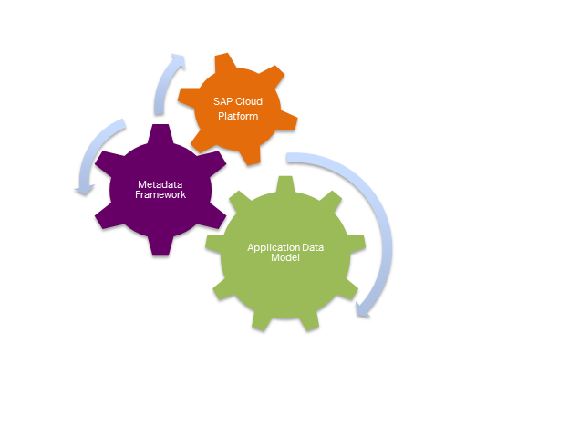

Extending SAP SuccessFactors
You can extend the scope ofSAP SuccessFactors HCM Suite using SAP Cloud Platform extension applications.
SAP Cloud Platform, extension package for SAP SuccessFactors allows you to extend your SAP SuccessFactors scope with applications running on the platform. The extension package makes it quick and easy for companies to adapt and integrate SuccessFactors cloud applications to their existing business processes, thus helping them maintain competitive advantage, engage their workforce and improve their bottom line.
The extension package for SAP SuccessFactors delivers the in-memory computing speed of SAP Cloud Platform and includes capabilities from the SAP SuccessFactors metadata framework (MDF) and SAP Cloud Platform for extension development. This combination of technologies makes it easier for SAP SuccessFactors customers, partners, and developers to extend cloud or on-premises applications, build entirely new cloud applications, and enable new processes that meet unique business needs. Therefore, you can use the SAP Cloud Platform, extension package for both internal custom development based on the provided SAP SuccessFactors APIs and for running certified extension applications provided by SAP partner companies.
With SAP SuccessFactors, you have the following extensibility layers:
- Application Data Model
This layer allows you to extend delivered objects by configuring labels, required fields, pick lists, and adding customer fields and so on.
- MDF
This extensibility layer allows you to extend SAP SuccessFactors applications from within the application or SAP Cloud Platform. You extend the applications using configuration and rules engine UI. You use delivered objects to create extensions and logic. The extensions you create are tightly coupled with EC entities and theres is no duplication of data. They can be consumed both from within EC and SAP Cloud Platform.
- SAP Cloud Platform
The platform provides a complete Java-based development and hosting environment. It allows you to create new applications, recreate your custom applications, and easily extend existing applications. You can leverage MDF custom objects and share them across extensions, accessing them using OData APIs.

Using MDF, you can develop custom objects, automatically expose them to SAP Cloud Platform, and enable them for social media and mobile apps. This allows you to quickly define the data layer inside the SuccessFactors HCM suite. You can then access that data layer and build on top of it by defining complex application logic and creating a feature-rich user interface in SAP Cloud Platform.
With MDF you can create the precise functionality needed to your company's unique business requirements. You can easily maintain and update the functionality as needed throughout the application lifecycle. You can also integrate changes into your existing business processes, since every MDF object comes ready with an OData API that can both read and write data.
Developers can leverage the following HTTP connectivity destinations pointing to SuccessFactors:
|
Name |
Protocol |
Description |
|---|---|---|
|
sap_hcmcloud_core_odata |
OData |
OData API of SuccessFactors HCM Suite, exposing both standard and custom business objects. This is the default API to be used for interactive extension applications. |
|
sap_hcmcloud_core_soap |
SOAP |
Provides connectivity to the SF API of SuccessFactors HCM Suite. It is mostly used for
system-to-system mass replication of data. Note
You create the destination manually. You use the ConnectivityConfiguration API for accessing the destination configuration. For more information, see ConnectivityConfiguration API |
You can find a list and implementation details of the APIs supported by SuccessFactors HCM Suite on SAP Help Portal, at http://help.sap.com/hr_api/.
-
Deploying and configuring an extension application using the SAP Cloud Platform cockpit (preferable for productive scenarios).
For more information, see Solutions.
-
Deploying and configuring an extension application using console client commands (preferable for development scenarios).
For more information, see Installing and Configuring Extension Applications (Beta).